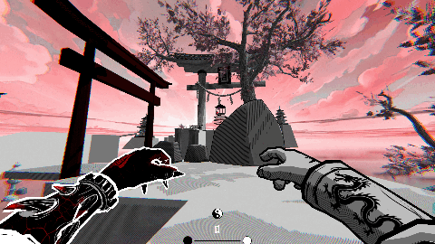
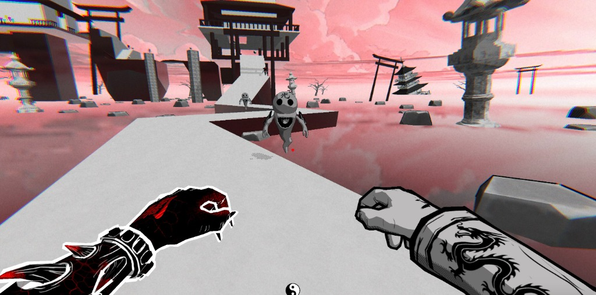

Update
Super happy to share that Digital Bros Game Academy has published our student project Heiko on its official itch page!
Description
Heiko is a first-person speedrun shooter developed during an academic Jam with the theme “duality”. The title comes from the Japanese term Heiko (balance), and places the player in the shoes of a warrior suspended between light and shadow.
The goal is simple yet challenging: reach the finish line as fast as possible, making full use of the character’s opposing powers.
Core Mechanic
The core mechanic revolves around a yin-yang projectile system:

- White Shot: eliminates black enemies
- Black Shot: eliminates white enemies
This creates fast-paced yet thoughtful combat, where every encounter becomes a small puzzle to solve on the fly. The minimalist art direction, based only on black, white, and pink, is inspired by the cherry blossom as a visual metaphor of impermanence.
Game Pillars

Speedrun
Everything pushes the player to go faster—short levels, hidden shortcuts, time trophies, and enemy drop bonuses (dash and bounce).
Duality
The heart of the gameplay lies in the opposition between light and shadow. Only by combining both sides synergistically can the player succeed.
Role & Personal Contributions
Core Gameplay
Implemented the character controller (movement, jump, shooting system). Created the yin-yang shooting system, with logic for the two projectile types and their interaction with enemies. Managed the ammo pickup system and integrated enemy drop bonuses (dash and bounce).
Feedback
Implemented visual and audio feedback (kinetic lines for boosts, particle effects for shots and enemy deaths, slow-down indicators, enemy triggered state signals).
Artistic Support
Collaborated with the art team on shader and material integration consistent with the minimalist style. Provided continuous technical assistance to artists to streamline asset import and usage in Unity.
Audio & UI
Connected gameplay events with diegetic audio and interface elements. Integrated minimal UI to represent ammo and player state.
Team Support
Handled rapid bug fixing during the jam. Provided constant support during critical phases, maintaining project stability despite the early departure of two team members.
Summary
Heiko was a project that successfully blended aesthetic and mechanical balance. My role focused on giving the prototype technical solidity and ensuring the concept translated into a stable, coherent gameplay experience. I also dedicated significant effort to developing a custom shader that added an extra layer of polish to the game.